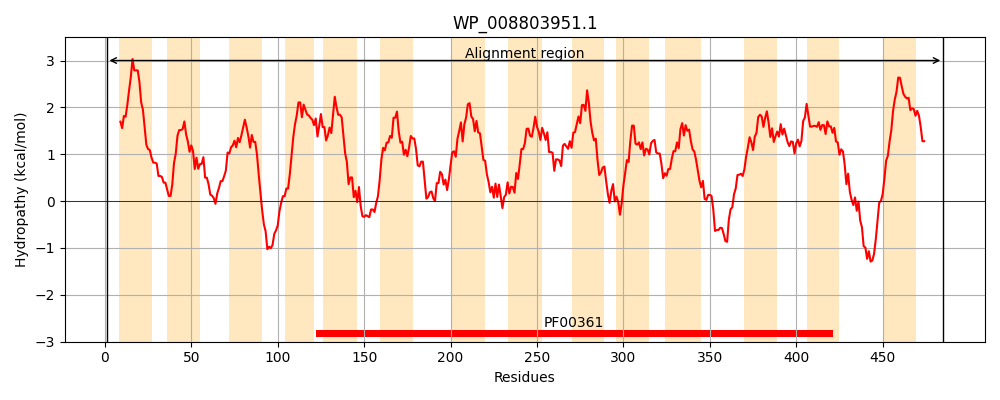
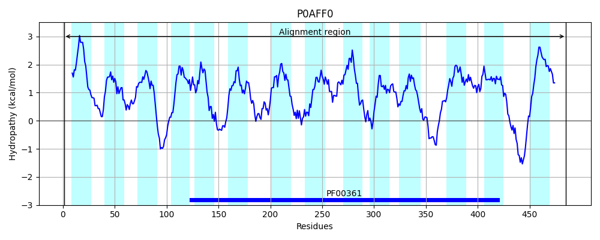
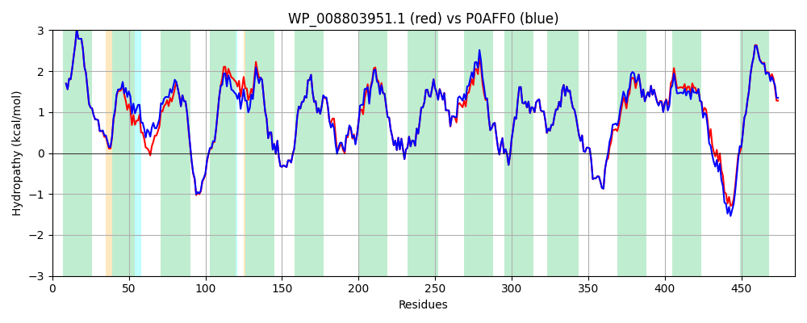

Hit Accession: P0AFF0
Hit TCID: 3.D.1.1.1
Hit Description: gnl|BL_ORD_ID|8820 gnl|TC-DB|P0AFF0|3.D.1.1.1 NADH-quinone oxidoreductase subunit N - Escherichia coli.
Mach Len: 485
e:0.000000
Query TMS Count : 14
Hit TMS Count: 14
TMS-Overlap Score: 13.850000
Predicted Substrates:CHEBI:5584;hydron
BLAST Alignment:
Score: 2267 , Bit scores: 877 bits, E-value: 0.0e+00, Alignment length: 485, Percentage identity: 93
Query: 1 MTITPQQLIALLPLLIVGLTVVVVMLSIAWRRNHFLNATLSVLGLNAALVSLWFVGQNGAMDVTPMIRVDGYAMLYTGLVLLASLATCTFAYPWLEGYKDNKEEFYLLVLIAALGGILLAGANHLAALFLGIELISLPLFGLVGYAFRQKRSLEASIKYTILSAAASSFLLFGMALVYANSGNLSFLALGKSLADNTLHEPLLLAGLGLMIVGLGFKLSLVPFHLWTPDVYQGAPAPVSTFLATASKIAIFGVVMRLFLYMPVGNSEAVRVVLGLIAFASIIFGNLMALSQTNIKRLLGYSSISHLGYLLVALIALQSGEMSMEAVGVYLAGYLFSSLGAFGVVSLMSSPYRGPDADSLFSYRGLFWHRPILSAVMTVMMLSLAGIPMTLGFIGKFYVLAVGVHAHLWWLVAAVVVGSAIGLYYYLRVAVSLYLSAPEQLNRDAPSNWQYSAGGIVVLISALLVLVLGIWPQPLISIVQLATPLM 485
MTITPQ LIALLPLLIVGLTVVVVMLSIAWRRNHFLNATLSV+GLNAALVSLWFVGQ GAMDVTP++RVDG+AMLYTGLVLLASLATCTFAYPWLEGY DNK+EFYLLVLIAALGGILLA ANHLA+LFLGIELISLPLFGLVGYAFRQKRSLEASIKYTILSAAASSFLLFGMALVYA SG+LSF+ALGK+L D L+EPLLLAG GLMIVGLGFKLSLVPFHLWTPDVYQGAPAPVSTFLATASKIAIFGVVMRLFLY PVG+SEA+RVVL +IAFASIIFGNLMALSQTNIKRLLGYSSISHLGYLLVALIALQ+GEMSMEAVGVYLAGYLFSSLGAFGVVSLMSSPYRGPDADSLFSYRGLFWHRPIL+AVMTVMMLSLAGIPMTLGFIGKFYVLAVGV AHLWWLV AVVVGSAIGLYYYLRVAVSLYL APEQ RDAPSNWQYSAGGIVVLISALLVLVLG+WPQPLISIV+LA PLM
Sbjct: 1 MTITPQNLIALLPLLIVGLTVVVVMLSIAWRRNHFLNATLSVIGLNAALVSLWFVGQAGAMDVTPLMRVDGFAMLYTGLVLLASLATCTFAYPWLEGYNDNKDEFYLLVLIAALGGILLANANHLASLFLGIELISLPLFGLVGYAFRQKRSLEASIKYTILSAAASSFLLFGMALVYAQSGDLSFVALGKNLGDGMLNEPLLLAGFGLMIVGLGFKLSLVPFHLWTPDVYQGAPAPVSTFLATASKIAIFGVVMRLFLYAPVGDSEAIRVVLAIIAFASIIFGNLMALSQTNIKRLLGYSSISHLGYLLVALIALQTGEMSMEAVGVYLAGYLFSSLGAFGVVSLMSSPYRGPDADSLFSYRGLFWHRPILAAVMTVMMLSLAGIPMTLGFIGKFYVLAVGVQAHLWWLVGAVVVGSAIGLYYYLRVAVSLYLHAPEQPGRDAPSNWQYSAGGIVVLISALLVLVLGVWPQPLISIVRLAMPLM 485 | Protein Hydropathy Plots: |
|---|
|  |  |
Pairwise Alignment-Hydropathy Plot:
|
|---|
|  |